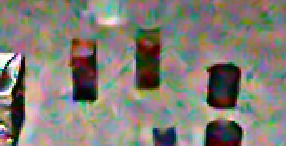
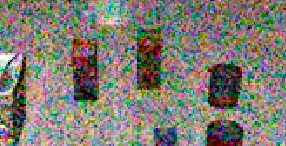
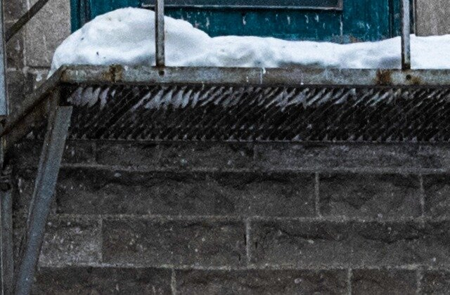
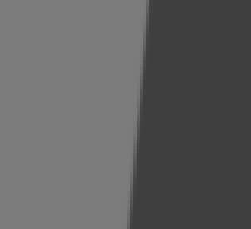
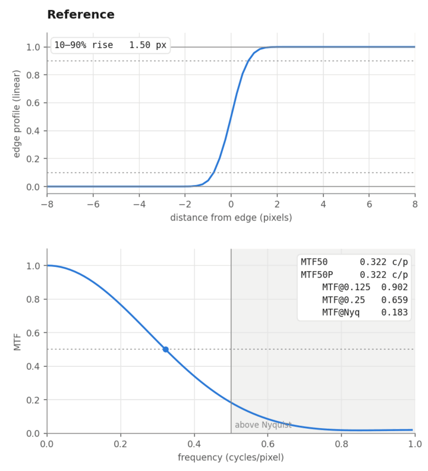
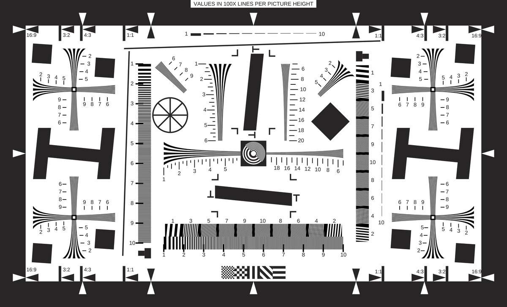
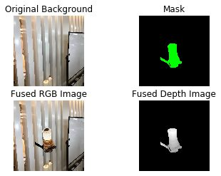
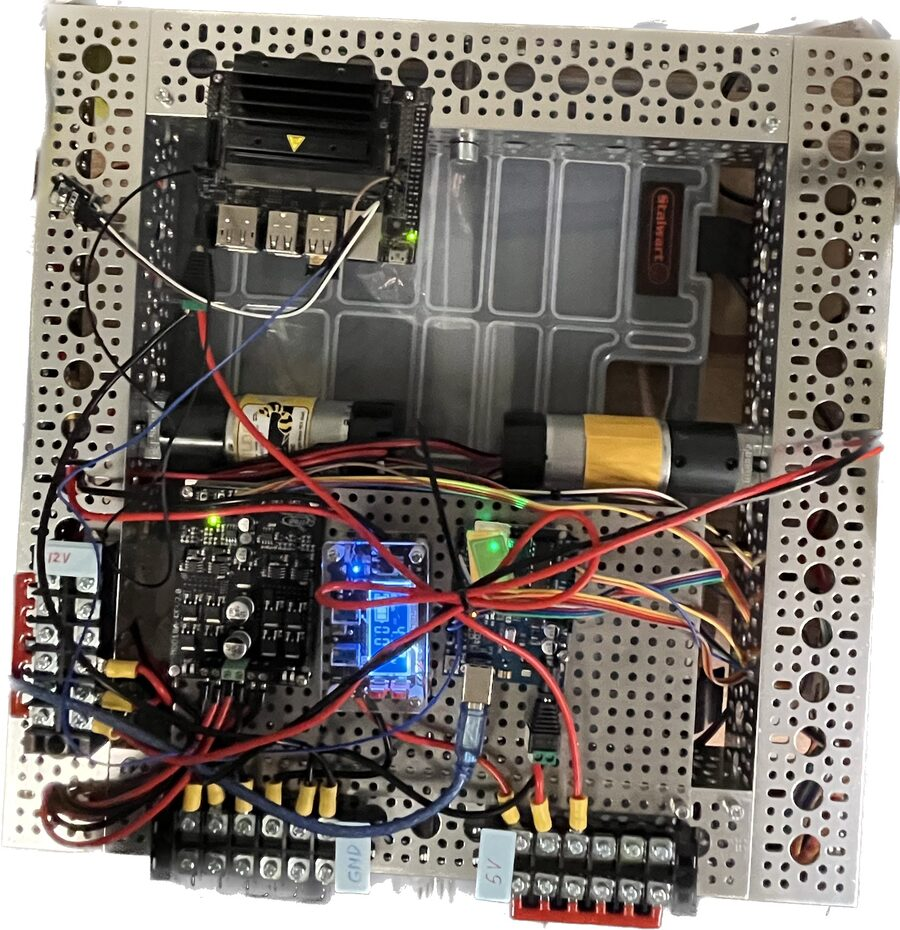
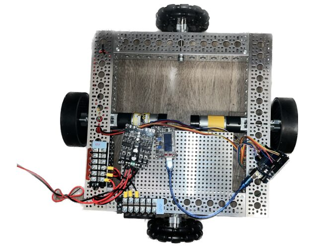

Junhan Hu
Camera ISP × robotics · San Francisco Bay Area
I'm a Senior Software Algorithm Engineer at OmniVision, developing hardware-efficient ISP algorithms for RAW denoise and HDR.
My robotics background (Zhejiang University, Georgia Tech, two robotics internships) drives my independent research into how camera pipelines affect robot policies.
I'm looking for roles in camera algorithms, robotics, or robotic vision.
- ISP at OmniVision: RAW denoise, highlight reconstruction and HDR for image sensors; ~20% gate-count reduction across the RAW and UV denoise stages.
- VLA × ISP research: un-tuned ISP noise reduction cost a LIBERO-trained robot policy ~16 percentage points of task success; gain-tuned noise reduction did not.
- Robotics: kinematics, BIT* planning and vision-servo simulation for an agricultural robot; camera pose estimation and synthetic RGB-D data at Midea.
Research: does the ISP matter for a robot policy?
2026 · vla-isp-probe · full report
The policy I evaluated, OpenVLA-OFT fine-tuned on LIBERO, was trained on clean simulator renders; a real robot would see the scene through a sensor and an ISP. I added a RAW sensor model and two ISPs to closed-loop LIBERO evaluation, pre-registered the hypotheses, and ran ~14k episodes on one 16 GB laptop GPU.


NR off tuned NR- With noise reduction (NR) tuned to the gain, no significant drop in task success was detected (all within 3.3 percentage points) for the tested tasks, noise levels, ISPs and policies.
- Un-tuned NR at high gain cost the third-person-only policy ~16 percentage points, meeting the pre-registered replication rule. With a wrist camera added, the main run showed 13 points, but an independent replication on fresh episodes measured ~8, below the pre-registered 10-point bar: not confirmed.
- Image-space Gaussian noise at matched PSNR caused no significant drop, so image-space robustness benchmarks would miss this failure.
Data table
| condition | OFT | 95% CI | OFT_w | 95% CI |
|---|
Also in the report: a reproduction of the LIBERO-Plus robustness numbers with a 4-bit model, and a file-name suffix in its instructions that alone costs 13 percentage points.
Camera ISP
OmniVision Technologies
2022 – now · Senior Software Algorithm Engineer (promoted 2024)
- Highlight reconstruction & HDR: algorithms across multiple ISP pipelines and sensor architectures that recover color and detail in clipped regions, for single- and 4-exposure HDR.
- RAW-domain denoise: DNLM-based Bayer denoise with 4-pipe tiled, bit-exact processing; now architecting RAW denoise for next-gen quad-Bayer (4C) sensors.
- Hardware cost-down: drove denoise cost-down work that reduced gate count ~20% across the RAW and UV denoise stages; led cross-stage trade-off studies.
- Maintain ISP blocks and standardized objective image-quality metrics across sensors and releases.
ISO 12233 charts and slanted-edge MTF
2026 · ISO12233 · method & validation
Reconstructions of the ISO 12233:2000, CIPA, e-SFR and s-SFR charts, exported as SVG and linear-reflectance arrays for ISP simulation, plus a slanted-edge MTF tool (a NumPy port of sfrmat5) validated against closed-form edges: MTF50 within 1% for Gaussian blur and unsharp-mask edges.
Below, one edge from the e-SFR chart and one photo go through the same sharpening or blur. The MTF hump from sharpening is the halo you see on the edge and around the rails.




Robotics
Darkblue Technology: agricultural robot
2021 – 2022 · Robotics Engineer Intern (remote)
- D-H kinematic model of the arm, integrated with control and perception.
- Replaced RRT with BIT* for motion planning: shorter paths with fewer nodes.
- Software sync of two cameras (~0.1 s); edge detector at ~98% accuracy, ~10 FPS.
- Vision-servo Gazebo simulation that cut on-field iteration time by ~80%.
Midea Group: camera pose from a circle, and synthetic data
2021 · Computer Vision Intern · camera-pose-estimation
Camera pose from a single circular feature, with algebraic and geometric solutions, and a virtual camera in OpenCV / Open3D that fuses textured object models into real backgrounds to synthesize labeled RGB-D training data.
- Distance: the axis perpendicular to the tilt is not foreshortened, so
d = f·L / L₁. - Lateral offset: the ellipse's shift from the principal point scales back to
ΔL = d·Δc / f. - Tilt: the foreshortened axis L₂ gives a quartic in
sin β, solved in closed form with Ferrari's method.

Mobile robot and arm library
2022 – 2023 · personal · arm_control
A differential-drive robot built from parts (chassis, motor drivers, power, Arduino + SBC), and a Python arm library: forward/inverse kinematics, trajectory following, collision checking.


Earlier projects
- 2023ndt_python: NDT scan matching in Python · carlike_control: control for a car-like robot
- 2021BM3D denoising, Georgia Tech image-processing project
- 2020RGBD-SLAM: a beginner's RGB-D SLAM in C++
- 2019ROS-RRT: A*, Dijkstra, RRT and smoothed RRT compared as ROS global planners
- ZJUparticle-filter localization (MATLAB)
Side projects
hamster-wheel-tracker
2026 · Kotlin, CameraX, OpenCV
A dedicated Android phone tracks one colored marker on my hamster's wheel, converts angular motion to distance and speed, and serves a dashboard over Wi-Fi. Validated overnight with the screen off.
StayInk
2026 · C · research stage
Keeps a jailbroken Kindle Scribe's E-Ink page visible while the device genuinely suspends. Evidence-first: every claim about Kindle internals is labeled fact, inference or unknown.